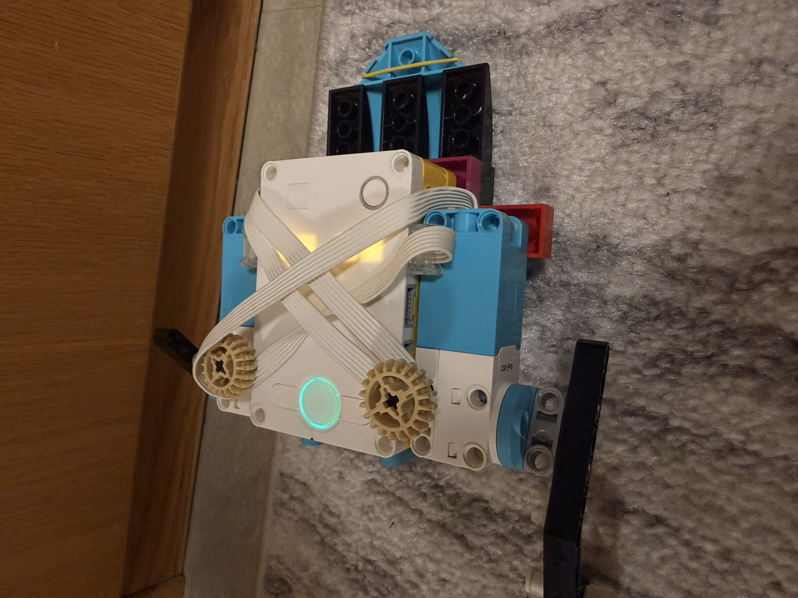
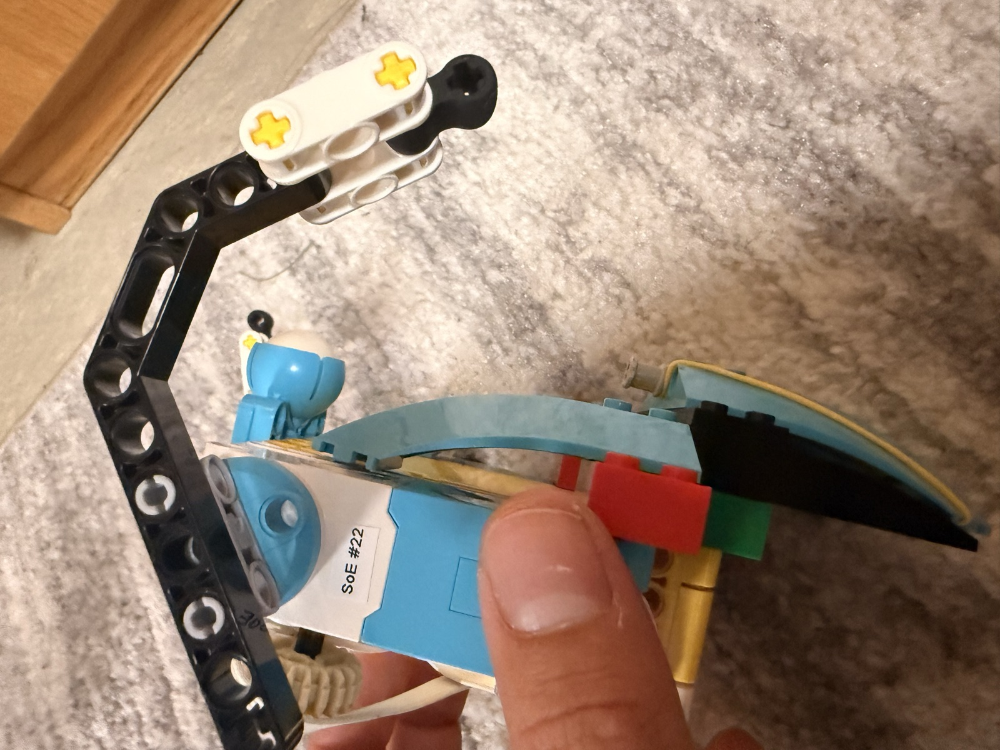

04 M — Sheet 04 / 06
Project 2: Silly Walks
Design a Silly Walks Robot

The assignment was to make something walk without wheels. The constraint was the same kit as the fishing rod, the SPIKE Prime set, plus a ten-minute limit to build it. I worked on this one alone.
It walks with its arms. The two black arms swing and throw the body forward; nothing on it rolls.

The first version did not go anywhere. The arms swung the way I wanted, but they slid across the surface instead of pushing against it, so the robot stayed where it was. The motion was not the problem; grip was.
I fixed it with rubber: a rubber band, and rubber pieces on the tips of the arms. Once the arms had something that caught the surface instead of sliding over it, the same swing moved the robot forward.
